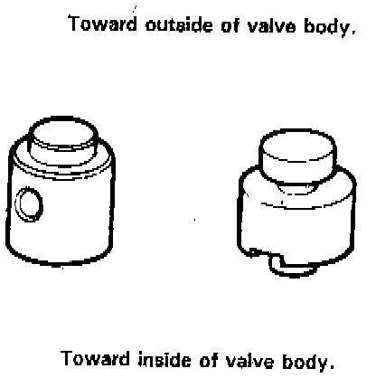
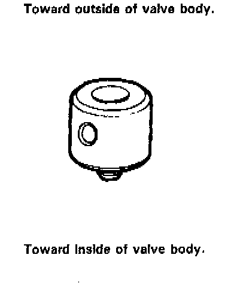
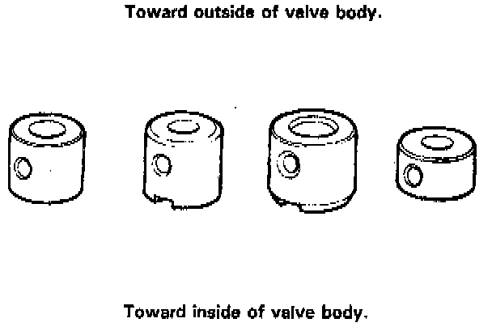
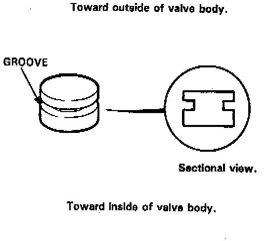

Valve Cap Installation

- Caps with one projected tip and one flat end are installed with the flat end toward the inside of the valve body.
- Caps with a projected tip on each end are installed with the smaller tip toward the inside of the valve body. The small tip is a spring guide.

- Caps with one projected tip and hollow end are installed with the tip toward the inside of the valve body. The tip is a spring guide.

- Caps with hollow ends are installed with the hollow end away from the inside of the valve body.
- Caps with notched ends are installed with the notch toward the inside of the valve body.
- Caps with flat ends and a hole through the center are installed with the smaller hole toward the inside of the valve body.

- Caps with flat ends and a groove around the cap are installed with the grooved side toward the outside of the valve body.